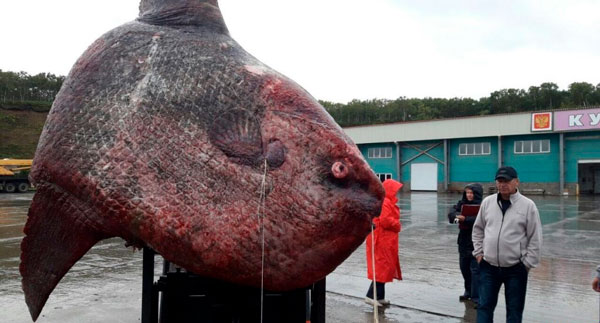
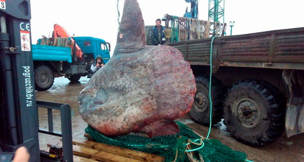
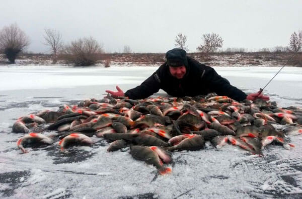
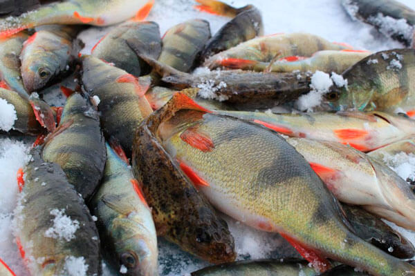

ВОТ ТАК УЛОВ! НА ДАЛЬНЕМ ВОСТОКЕ С ПОМОЩЬЮ АКТИВАТОРА КЛЕВА ПОЙМАЛИ РЫБУ-ЛУНУ

Сахалинское судно "Курильский рыбак" вытащило сетью очень редкий экземпляр рыбы-луны. При взвешивании выяснилось, что она весит больше тонны. Как утверждают сами рыбаки, никто даже подумать не мог о таком улове - они просто решили "побаловаться" популярным стимулятором улова FishDrive. Рассказываем, чем эта шалость в итоге обернулась.
Рыбу с рекордным весом 1 100 килограммов "Курильский рыбак" (рыболовецкий сейнер с Сахалина) вытащил сетями еще два дня назад. Российские рыбаки работали около острова Итуруп. Основная их цель - горбуша, а рыба-луна подвернулась случайно. Как утверждают члены команды сейнера, во всем виноват FishDrive - стимулятор улова, который один из рыбаков решил протестировать в открытом море. Тест оказался успешным - горбуши удалось поймать почти на треть больше, чем обычно. Но затем в воде показалась громадная рыба-луна.

Взвесив все "за" и "против", рыбаки решили доставить столь редкий экземпляр на базу. Поскольку в холодном трюме для нее места не нашлось, за время перехода и погрузки на берег рыба испортилась. Ее отвезли на свалку местной компании "Гидрострой", где рабочие прикармливают и фотографируют диких медведей. От тысячекилограммовой туши очень быстро ничего не осталось. Рыбу хотели забрать себе местные краеведы, чтобы сделать из нее чучело для Сахалинского краеведческого музея, но не успели.
До сих пор неясно, что именно заставило рыбу-луну приплыть на место поклевки горбуши. Как утверждают сами рыбаки, все дело в крови марала, которая входит в состав FishDrive. Именно она разжигает аппетит и заставляет плыть как мирную, так и хищную рыбу за едой. Что, собственно, и случилось с бедной рыбой-луной.
Наведя справки, мы выяснили, что впервые стимулятор улова FishDrive появился в нашей стране в начале года, и буквально за пару недель его приобрели более двух миллионов российских рыбаков. Секрет популярности оказался простым: в составе приманки содержатся нативные вытяжки растений, кровь марала, концентраты природных компонентов. Как утверждали эксперты, благодаря такому мощному сочетанию компонентов рыба должна была просто сойти с ума. В итоге так и вышло - FishDrive успешно привлекал не только хищную, но и мирную рыбу, разжигая аппетит и заставляя двигаться по направлению к корму через огромные расстояния. А через некоторое время он был признан лучшей приманкой, причем не только в России, но и в Европе.
В настоящее время продажа FishDrive осуществляется на официальном сайте российского представителя. Активатором пользуются и новички, и опытные рыбаки, и даже представители рыболовных хозяйств. Кстати, сейчас на сайте акция, можно успеть заказать средство всего за 67 грн!


Нет, ну это капец, товарищи. Поймать рыбу весом в тонну, чтобы потом скормить медведям? Совсем умом тронулись?
Интересно другое - с помощью FishDrive больше сомов вроде не ловили ничего. А тут рыба-луна. Офигеть! Не зря я с этой штукой на рыбалку гоняю ))
Да, активатор клева - отличная вещь. Ловится все, что шевелится ))) да еще и цена всего 67 грн

Никогда не понимал ничего в этих активаторах клева. Какой прикол с ними рыбачить? Никакого спортивного интереса!
Ну не знаю, я только с FishDrive на рыбалку гоняю, потому что полный чайник, на другую приманку у меня ловить не получается. А с этой - хоть на окуня, хоть на щуку, да хоть на карася в конце-концов. Клюет все, что шевелится. И домой возвращаться не стыдно.

Интересная приманка, надо попробовать. Долго доставка идет? За две недели успеют?
Конечно успеют. Если на официальном сайте заказывать, то привезут дней за 5-7. Там кстати скидка сегодня, успевай.
Официальный сайт: узнать подробности акции